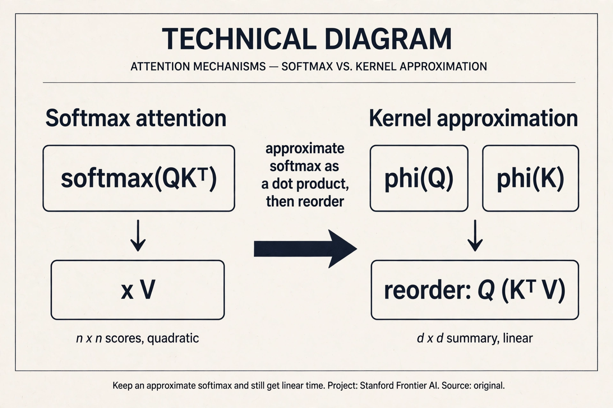
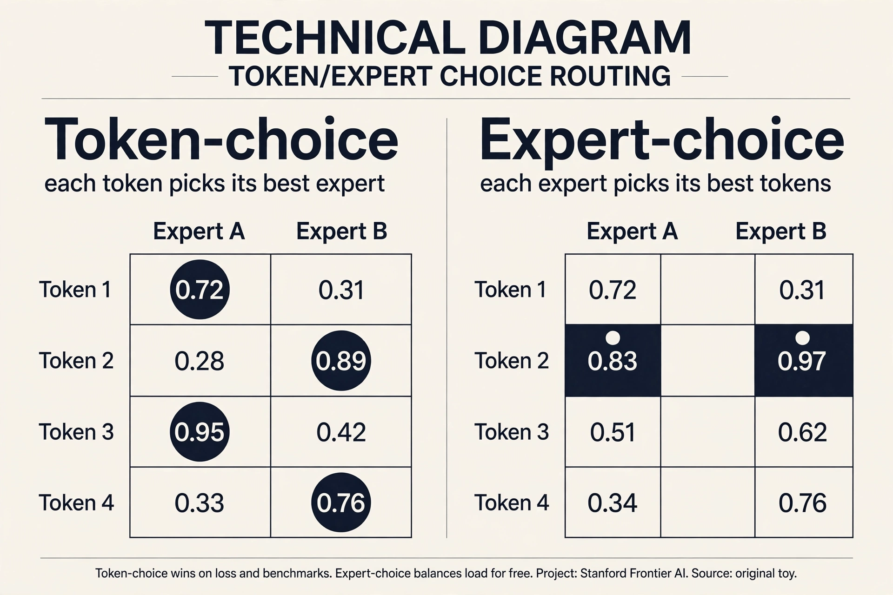
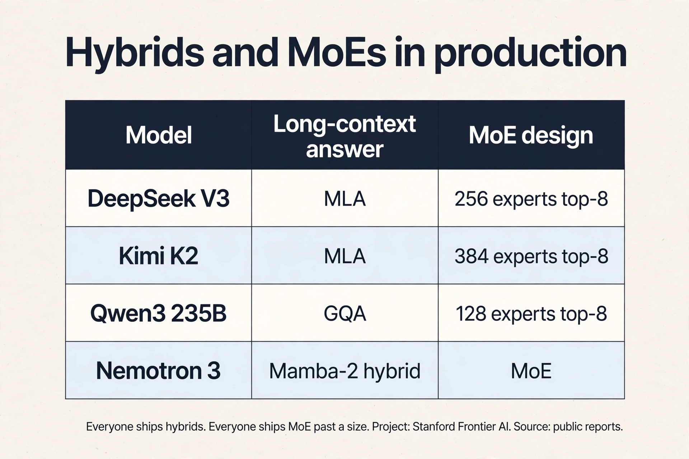

Lecture 4: Linear Attention and Mixture of Experts
Video blocked (ad-blocker or local file mode).
Watch on YouTubeVideo not loading? Watch on YouTube
Original lecture. Tatsu Hashimoto covers attention alternatives for long context and the full mixture-of-experts design space.
The problem: the quadratic bill comes due
Context windows keep growing. Vendors race to larger sizes on a log scale 01:37 ⏱01:37. The feedforward layers cost O(n): double the sequence, double the work. Attention costs O(n^2): double the sequence, quadruple the work. Past a point, attention dominates everything.
Two drawers of tools exist. Hybrids: mix cheap local layers with rare full-attention layers (last lecture’s sliding windows). Systems: FlashAttention rearranges attention to minimize memory traffic, a pure constant-factor win of about 2x that also avoids materializing the n x n matrix 03:18 ⏱03:18. Constants matter enormously. But for 5 to 10M tokens, constants are not enough. The complexity class itself has to change. That is where linear time comes in.
This lecture has two halves and one theme: more capability per unit of compute. First half: attention in linear time. Second half: parameters you do not have to pay for.
The one idea: move the parentheses
Write attention without the softmax for a moment: (QK^T)V. Matrix multiplication is associative. So (QK^T)V = Q(K^TV) 06:05 ⏱06:05.

The left path builds the n x n score matrix first: cost n^2 x d. The right path builds a d x d summary, K^TV, first: cost n x d^2. Run the numbers. n = 1,000,000 tokens, d = 1,000 dimensions. Left: 1e15 operations. Right: 1e9. Six orders of magnitude, from one parenthesis move. Sequence lengths are millions. Hidden dims are thousands. The right path wins. Every linear attention method is an elaboration of this reorder.
Watch it on a toy. Two tokens, two dimensions. Q = [[1,0],[0,1]], K = [[1,0],[1,1]], V = [[2,0],[0,3]].
left path: scores = QK^T = [[1,1],[0,1]]
out = scores x V = [[2,3],[0,3]]
right path: S = K^TV = [[1,0],[1,1]]^T x [[2,0],[0,3]]
= [[2,3],[0,3]]
out = Q x S = [[1,0],[0,1]] x [[2,3],[0,3]] = [[2,3],[0,3]]
both paths: [[2, 3], [0, 3]] same answer
Same answer, different work. The left path built a 2x2 score matrix. The right path built a 2x2 summary S and skipped the scores entirely. That summary S is the whole idea. It is small (d x d, not n x n), and everything flows through it.
Subchapter: the kernel view (keep an approximate softmax)
The lecture drops the softmax to get associativity. One idea further: keep an approximate softmax and still reorder. A feature map φ turns the softmax into a dot product: softmax(q, k) ≈ φ(q) · φ(k). With that, attention becomes φ(Q)(φ(K)^T V), and the parentheses move again.
Worked toy in 1D. q = 2, k = 3. True exp(qk) = e^6 ≈ 403. Feature map φ(x) = [1, x, x²/2] (Taylor of exp). φ(2)·φ(3) = 1 + 6 + (4×9)/4 = 16. Not exact, but the ranking survives: larger qk gives a larger dot product. Real kernels (elu(x)+1, random Fourier features) do this in d dimensions. One idea added: approximate first, then reorder. The softmax stays in spirit, the quadratic term leaves.

The RNN duality: train dense, infer recurrent
The right path has a second form. Sweep left to right, maintaining the summary as a running state: S_t = S_{t-1} + k_t v_t^T, then output q_t S_t 08:11 ⏱08:11.

Two views of the same math. Dense form: compute the whole summary in parallel, great for training on GPUs. Recurrent form: update a fixed-size state one token at a time, great for inference. RNNs were always good at inference and bad at training, because their state update had to run in order. Linear attention gets both: the dense-to-recurrent equivalence is exact.
The lossy step was dropping the softmax at the start 21:02 ⏱21:02. Everything after that is just algebra.
Dropping the softmax is exactly what enables the reorder: without it, associativity moves the quadratic term from n^2 to d^2, and the recurrent form gives fixed-size-state inference. Softmax attention needs a KV cache that grows with context. Linear attention carries a fixed state instead. The price is expressiveness: the all-to-all softmax connection is genuinely powerful, which is why every deployed system is a hybrid, not pure linear. The equivalence is between the two forms of linear attention, not between linear and softmax attention. Dropping the softmax is the lossy step. As you replace more softmax layers with linear ones, you lose more of the all-to-all modeling power, and long-context QA degrades first.
Where the reorder breaks: the state is dumb
Pure linear attention always carries the full state forward. S_t adds the new key-value pair and never forgets. Work the failure. A 1M-token document’s summary S is a d x d matrix: at d = 1000, that is 1M numbers. One million tokens of information compressed into one million numbers: one number per token, on average. Old tokens pollute the state forever. The model cannot erase.
The degradation is measurable. Controlled ablations (ByteDance Seed + UC Santa Cruz) show the hybrid pattern clearly: at low ratios of linear layers, no quality hit. Past a threshold, long-context performance degrades steadily toward pure-RNN levels 19:03 ⏱19:03. Single-key retrieval is explicitly optimized by these architectures and hides the degradation. QA reveals it: ask questions that need many scattered facts and the linear layers fail first.
The key question
The state can only accumulate. What if it could forget, and erase before writing? Two gates answer, one after the other.
Mamba-2: learn when to forget
The LSTM lesson, relearned: add a forget gate. Mamba-2 adds gamma(t), computed from the current input only 11:46 ⏱11:46.

The update: S_t = gamma(t) x S_{t-1} + k_t v_t^T. When gamma is near 0, the past is wiped. When it is near 1, the past survives. Because gamma depends on the input and not the state, the dense/recurrent duality survives: the parallel training form still works. If the gate depended on the state, the recurrence would be sequential and training would stall. That constraint is the whole design.
Nemotron-3 alternates Mamba-2 layers with full softmax attention and matches strong models with much better long-context throughput 13:28 ⏱13:28.
Subchapter: Mamba-1 vs Mamba-2 (from scan to duality)
One increment on the selective SSM. Mamba-1 makes the SSM matrices input-dependent (selection: the model decides per token what to keep) and computes the recurrence with a hardware-aware parallel scan. Fast at inference, because the state is fixed size. But the scan is the only fast path: training parallelizes the scan, not the model.
Mamba-2 rewrites the same selection idea as gated linear attention. The state update S_t = gamma(t) S_{t-1} + k_t v_t^T is exactly the Mamba-2 gate from this lecture. One idea added: the SSD (state-space duality) form. Now the dense form trains in parallel on GPUs and the recurrent form infers with a fixed state, the same duality as linear attention. Mamba-1 selected. Mamba-2 selects and dualizes. Same selection, new math form, both fast paths unlocked.
Gated delta net: erase before writing
Push further. Add a second gate beta(t) controlling how much of the current input enters the state, plus a projector (I - beta k k^T) that erases the old key direction before writing the new one 15:02 ⏱15:02.

The intuition: when writing key k_t, first remove what the state already stored along k_t, then add the new information. Same projector appears independently in meta-learning least squares and fast weight programming: different derivations, same solution. Qwen 3.5 and Qwen Next use a 3:1 gated-delta-net-to-attention hybrid with strong results and much higher decode throughput at long contexts 18:21 ⏱18:21.
DSA: the indexer alternative
DeepSeek Sparse Attention takes a different route. Keep softmax attention, but run it on a subset. A lightweight indexer scores tokens from qk inner products through ReLU and learned weights, takes the top-k positions, and full attention runs only on those 23:13 ⏱23:13.

The indexer is cheap by design: low-dimensional, low-precision. The second stage is quadratic but on a short, bounded context. The clever deployment trick: train a normal transformer, then bolt the indexer on during the long-context extension phase you were running anyway 24:49 ⏱24:49. DeepSeek v3.2 matches Claude 4.5 Sonnet and Gemini 3 on the reported evaluations. GLM5’s ablations show near-zero loss vs full attention even on hard retrieval 26:00 ⏱26:00. Note the pattern: top-k selection with an auxiliary loss is the same trick MoE routing uses below.
Linear attention changes the complexity class to O(n) via the associativity reorder, at the cost of dropping softmax expressiveness. It needs hybrid softmax layers to stay competitive. DSA keeps full softmax quality on a top-k subset chosen by a cheap indexer. The indexer itself is still quadratic but with tiny constants. Sliding windows keep exact softmax in a fixed local window plus periodic global layers. Simplest, but the window bound is rigid. All three ship as hybrids with full attention, never pure. Training with the indexer is complex and annoying, and you run long-context extension anyway. Bolting it on in that phase costs little extra training and works surprisingly well despite the non-differentiable top-k. Do the expensive thing once, add the cheap thing late.
Half two. The problem: parameters cost FLOPs
Dense models tie parameters to FLOPs: every parameter fires on every token. A 1T-parameter dense model costs 1T-scale FLOPs per token. What if most parameters could sit idle most of the time? Then parameters could grow without the FLOP bill growing.
MoE: more parameters than you pay for
Replace the MLP with several smaller FFNs called experts. A router sends each token to one (or k) of them. Four experts of the original size: 4x the parameters, about 1x the FLOPs per token 34:26 ⏱34:26.

The evidence: Switch Transformer (Fedus et al. 2022) shows test loss falling as expert count rises at fixed active parameters. OlMoE trains about 2x faster than its dense counterpart. DeepSeek v2 showed far fewer active parameters matching or beating dense models. Past a certain size, nearly every released model is an MoE 36:54 ⏱36:54.
MoE is also a parallelization axis: experts are natural chunks for different devices (expert parallelism), trading communication for the ability to scale further 39:55 ⏱39:55.
Because parameters keep helping even when only a subset is active per token. At fixed training FLOPs, more experts means lower loss. At fixed inference FLOPs, fewer active parameters means cheaper serving at the same quality. The Switch and OlMoE results show this is not subtle: about 2x training speedups and strictly better loss at matched compute. Above the size where infrastructure can handle routing, there is little reason to stay dense. Infrastructure complexity. Routing adds communication, experts must be sharded across devices, training needs balancing heuristics, the router softmax is a stability risk, and fine-tuning overfits badly. Small labs often stay dense because the operational cost exceeds the quality gain at their scale.
Token-choice TopK routing: one matmul
Three routing designs exist: token chooses experts, expert chooses tokens, or a global assignment solver. Nearly everything ships token-choice TopK: each token picks its k favorite experts 48:15 ⏱48:15. OlMoE shows token choice beats expert choice on both loss and benchmarks.
The router itself is embarrassingly simple: one matmul. Each expert owns a vector. Score = inner product with the token. Softmax. Take top-k 50:02 ⏱50:02. Hash routing (no learning) works a little. RL routing works but nobody uses it: too much overhead and variance for what heuristics achieve. Global linear assignment is optimal and far too expensive.

DeepSeek’s widely copied refinement: fine-grained experts (many small ones instead of few big) plus shared experts that bypass the router and process every token 54:27 ⏱54:27. Common processing moves to the shared expert. Routed experts specialize. OlMoE disagrees slightly on shared experts helping, but agrees fine-grained helps.
Subchapter: the routing zoo (who chooses whom)
Three designs, one worked toy. Router scores for 4 tokens and 2 experts:
A B tok1 0.72 0.31 tok2 0.28 0.89 tok3 0.95 0.42 tok4 0.33 0.76
Token-choice top-1. Each row picks its max. tok1 goes to A, tok2 to B, tok3 to A, tok4 to B. Every token gets its best expert. Load is 2 and 2 here, but nothing guarantees it: collapse is the failure mode. OlMoE shows token-choice beating expert-choice on both loss and benchmarks.
Expert-choice top-2. Each column picks its top 2. A takes tok3 (0.95) and tok1 (0.72). B takes tok2 (0.89) and tok4 (0.76). Load is balanced by construction: 2 each, always. One idea flipped: the experts choose. The price: a token can be dropped if no expert picks it, and tokens get experts that ranked them low. Balance is free, coverage is not.
Hash. Token i goes to expert (i mod E). No learning, no collapse, worse loss. The baseline that ships nowhere.
The ladder: learn who chooses (token), flip the chooser (expert), remove the learning (hash). Token-choice plus the F x P aux loss is the production answer.

Where MoE breaks: rich gets richer
Sparsity during training is the hard part: only k experts are active, so gating is non-differentiable and you never see the counterfactual experts 58:26 ⏱58:26. The failure mode is collapse. The chosen experts get gradient signal, get stronger, get chosen more, and the model ends with two experts doing everything while the rest sit idle 63:36 ⏱63:36.
The OlMoE ablation is stark: remove the balancing loss and nearly all tokens pile onto two experts. The rest of the parameters do nothing for most of training 68:03 ⏱68:03. Work the waste: 64 experts, 2 active, 62 dead. You paid for 64 and got 2.
The fix is the Switch auxiliary loss: L = F x P, where F is the fraction of tokens dispatched to expert i and P is the router’s probability mass on expert i. The gradient of F x P with respect to P is F: popular experts get pushed down in proportion to their popularity. Not derived from first principles. Understood through its gradient action.

DeepSeek v2 adds device-level balancing (balance machines, not just experts) as a second auxiliary loss 66:31 ⏱66:31. DeepSeek v3 moves toward aux-loss-free balancing with a per-expert bias term, though some auxiliary loss remains against extreme imbalance.
MoE systems and stability notes
Expert parallelism ships activations between devices, so communication is the tax. Nemotron-3 downprojects the residual stream before the all-to-all collective: smaller vectors to move, without shrinking the model’s hidden dim 71:38 ⏱71:38.
Historical warning: early MoE inference silently dropped tokens when an expert’s queue overflowed, making outputs depend on other users’ traffic. Modern frameworks (MegaBlocks and descendants) fixed this 75:12 ⏱75:12.
The router adds another softmax, another danger zone. Fixes that ship: run the router in fp32, and put z-loss on the router (OlMoE ablations show it calms spiky loss curves) 76:35 ⏱76:35.
Fine-tuning MoEs overfits badly: huge train/val gaps vs dense models. Common workarounds: fine-tune attention only, fine-tune non-MoE layers, or just use far more data 78:11 ⏱78:11.
Upcycling: copy a trained dense model’s MLPs into experts, add a random router, keep training. It gave real wins: miniCPM 2.4B to 13.4B, Qwen 1.8B to a strong 2.7B MoE. Nobody does it now: train the MoE from scratch instead 79:40 ⏱79:40.
DeepSeek v1 to v3: the evolution in one screen
v1 is the platonic MoE: shared + fine-grained experts, TopK routing, auxiliary balancing 82:33 ⏱82:33. v2 scales up with two shared experts and adds device-routing and communication-balancing losses: systems respect as architecture. v3 goes aux-loss-free-ish with per-expert bias, switches expert weighting to sigmoid+softmax, and adds two more ideas: MLA and MTP.
Multi-head Latent Attention compresses Q/K/V into a low-dimensional latent c, and the KV cache stores c instead of K and V 83:56 ⏱83:56. Care needed where MLA meets RoPE in the cache. Multi-Token Prediction predicts several future tokens at once: a statistical win that doubles as a built-in speculative decoder 85:06 ⏱85:06.
Subchapter: what is used where (MoE and linear hybrids in production)
Verified against public reports as of October 2026.
| Model | Long-context answer | MoE design | Source |
|---|---|---|---|
| DeepSeek-V3 | MLA | 256 experts, top-8 + 1 shared | DeepSeek-V3 paper |
| DeepSeek v3.2 | MLA + DSA bolt-on | same as V3 | DeepSeek report; lecture |
| Kimi K2 | MLA | 384 experts, top-8 + 1 shared | Kimi K2 report (arXiv 2507.20534) |
| Qwen3-235B-A22B | GQA, no linear layers | 128 experts, top-8, no shared, QK-norm | Qwen3 report |
| Nemotron-3 | Mamba-2 + attention hybrid | MoE | NVIDIA; lecture |
Read it. MLA won the open frontier twice (DeepSeek, Kimi K2). Routed expert counts grew: 128, then 256, then 384, always top-8 active. The shared expert survived at DeepSeek and Kimi but not at Qwen3, which dropped it and added QK-norm instead: the DeepSeek recipe is not the only answer. And Qwen3 shows a frontier lab shipping no linear attention at all: GQA plus scale still competes.

Token x arrives, dim 4096. The router scores 256 experts: one matmul xW_g, a softmax, then top-8. Say experts 7, 42, 103, 118, 155, 190, 221, 244 win, with weights renormalized to sum to 1. Each chosen expert runs its SwiGLU FFN on x: up to 2048 dims and back down. The shared expert also runs on x. Output = shared(x) + sum of w_i * expert_i(x). FLOPs: 8 small experts plus 1 shared, about the same as one dense FFN. Parameters touched: 9 experts’ worth. The other 247 experts sit idle. That is the whole trick: capacity without the bill. Back through the 8 chosen experts and the router weights w_i, plus the router’s own scores via the softmax. The 247 idle experts get no gradient from this token. That sparsity is why MoE needs the balancing loss: experts that never get chosen never learn.
Memory capacity and expert all-to-all communication. 1T parameters in bf16 is 2TB: you need many GPUs just to hold the weights, so expert parallelism shards experts across devices. Each token’s top-8 experts usually live on different devices, so every layer does an all-to-all exchange of activations. At batch size 1 the all-to-all latency dominates. The fixes from the field: downproject before the collective (Nemotron-3), keep hot experts on the same device, and quantize weights to fp8. The interview signal: name the two bottlenecks (capacity, all-to-all), then the tool that attacks each. The all-to-all moves activations per token per layer. Small batches give the communication nothing to amortize against, so latency per token stays high. Large batches amortize it but need more KV cache. MoE serving is a batch-size negotiation between the router’s traffic and the cache.
Because load balance is not the objective; loss is. Token-choice gives every token its best experts, so each token gets the highest-quality computation. Expert-choice gives every expert a fair workload, so some tokens get served by experts that scored them low, or get dropped entirely. OlMoE’s ablations show token-choice beating expert-choice on both loss and benchmarks. The field’s answer: take token-choice and pay for balance separately with the F x P auxiliary loss. When the serving system cannot tolerate imbalance. Expert-choice guarantees fixed compute per expert per step, which simplifies capacity planning. Production frontier models still pick token-choice, but research systems with strict device budgets sometimes prefer the guarantee.
Below the size where your infrastructure can handle routing. The operational cost (expert parallelism, all-to-all tuning, balancing losses, router stability) exceeds the quality gain at small scale, and MoE fine-tuning overfits worse. The rule from the lecture: past a certain size nearly every released model is an MoE, because the threshold is operational, not scientific. If you cannot afford a systems engineer for the router, stay dense. Yes, on loss: Switch Transformer showed gains at modest sizes. The question is total cost, not loss. At small scale the extra engineering and serving complexity outweigh the loss win. That is why small labs stay dense while frontier labs go MoE.
Mapping back: what each idea fixes
| Pain | Fix | How |
|---|---|---|
| n^2 attention at long context | Associativity reorder | (QK^T)V = Q(K^TV). Cost n^2 d becomes n d^2. |
| KV cache grows with context | RNN duality | Fixed-size state S_t updated recurrently at inference. |
| State never forgets | Mamba-2 gamma(t) | Input-dependent forget gate. Duality survives. |
| State overwrites blindly | Gated delta net | (I - beta k k^T) erases the old key direction first. |
| Quality loss at high linear ratios | Hybrids | Keep some full softmax layers. Low ratios free, high ratios degrade. |
| Softmax too expensive, quality needed | DSA | Cheap indexer picks top-k. Full attention on the subset. |
| Parameters cost FLOPs | MoE | Route each token to k experts. Params up, FLOPs flat. |
| Experts collapse | F x P aux loss | Gradient pushes mass off popular experts. |
| Router softmax spikes | fp32 router, z-loss | Calm the danger zone. |
The honest price
Linear attention only ships as a hybrid. The ablations are clear: past a threshold ratio, long-context QA degrades toward pure-RNN levels. The pure linear model is a research object, not a product. DSA’s frontier-matching claims come from DeepSeek’s own report.
MoE’s price is operational. Routing adds communication. Experts must be sharded. The router is another softmax to guard. Fine-tuning overfits. Small labs stay dense because at their scale the infrastructure cost exceeds the quality gain. And the deepest caveat from the lecture: these are engineering verdicts, not theorems. They hold until the next ablation says otherwise.
Recap: the whole lesson on one screen
The story in eight steps. Each step answers the one before it.
- The bill comes due. Attention is O(n^2), the FFN is O(n). At 5-10M tokens, constant-factor wins like FlashAttention are not enough. The complexity class must change.
- Move the parentheses. (QK^T)V = Q(K^TV). Drop the softmax, reorder, and n^2 d becomes n d^2. One idea, all of linear attention.
- Train dense, infer recurrent. S_t = S_{t-1} + k_t v_t^T runs parallel for training and as a fixed-size state for inference. The equivalence is exact. The softmax drop is the lossy step.
- The state is dumb. It only accumulates. Past a threshold of linear layers, long-context QA degrades toward pure-RNN levels. Single-key retrieval hides it. QA reveals it.
- Gates make the state smart. Mamba-2’s gamma(t) forgets. Input-dependent only, so the duality survives. The gated delta net adds beta(t) and a projector that erases the old key direction before writing.
- DSA indexes, then attends. A cheap indexer picks top-k tokens. Full attention runs on the subset. Bolted on during long-context extension.
- MoE decouples params from FLOPs. Route each token to k experts. 4x parameters, 1x FLOPs. The router is one matmul plus top-k. DeepSeek adds fine-grained and shared experts.
- Balance or collapse. Without the F x P aux loss, two experts take everything and 62 sit idle. The gradient pushes probability mass off popular experts.
Official sources and further reading
Official: - Lecture 4 video and slides. - Fedus et al. (2022): Switch Transformer, expert scaling and the F x P auxiliary loss. - Dao and Gu (2024): Mamba-2, the gated linear-attention view. - DeepSeekMoE (2024): fine-grained and shared experts.
Further reading: - OlMoE (Ai2): the careful open MoE study, token-vs-expert choice, load-balancing and z-loss ablations. - Su et al. RoPE paper: background for the MLA/RoPE interaction note.
Caveats from these sources. Hybrid-ratio ablations are messy and from one study. Treat the degradation curves as directional. DSA frontier-matching claims come from DeepSeek’s own report. Upcycling is documented but currently unfashionable: no 2026 examples. MoE fine-tuning overfitting numbers are from one GLUE-style task.
Connections to the other courses
- CS224N: softmax attention is defined there. This lecture is the linear-time diff.
- CS336 L03: the transformer block this lecture modifies. RoPE meets MLA in the KV cache.
- CS336 later lectures: the KV cache from the inference lecture is what DSA and MLA shrink. Expert parallelism returns in the systems lectures. MTP’s speculative decoder returns in inference.
- CS329Z: the router is a tiny agent: observe token, pick expert, get reward via gradient.
Sources
- VIDEOLecture 4 video, Stanford Online YouTube
- NOTESOfficial subtitle transcript (en-US)
- SLIDESLecture 4 slides (PDF)
- PAPERFedus et al., Switch Transformers (2022)
- PAPERDao and Gu, Mamba-2 (2024)
- PAPERDeepSeek-AI, DeepSeekMoE (2024)
- SUPPLEMENTOlMoE: open mixture-of-experts study (Ai2)